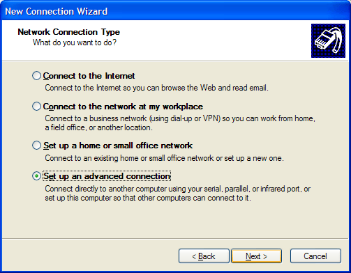
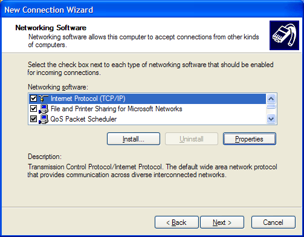

How to setup Tivo 3.0 to talk to Windows XP via Serial PPP
The usefulness of this is clear: it lets you do your daily calls over your high speed internet connection without getting a TivoNet or TurboNet card.
Quick Tip: Already got a TivoNet or TurboNet card? - Tivo added TivoNet and TurboNet support as well. This is a quick easy answer on how to use that: Install the card, connect it to the network, have a DHCP server running somewhere, plug the Tivo in, put ",#401" in the Tivo's dialing prefix. Voila, it now dials over the ethernet. Nice. :D
Requirements:
- A Tivo running 3.0 or above software.
- A PC with a serial port nearby running Windows XP.
- A null modem cable connecting the two.
- An understanding of your LAN setup and how networking works.
Note that this is NOT the same as previous Tivo to Serial via PPP setups. This only works with the new built in serial PPP method in 3.0. The main difference: It's not "always on". It connects when the Tivo wants to dial in, and disconnects when the Tivo is done dialing. This is *not* suitable if you want to hook your box up to use TivoWeb or some such remote connectivity via the internet.
Also note that this is totally unsupported by Tivo. Do not call them for help with it. Go to the Tivo Community Forums and look in the Underground if you have problems.
This has only been tested on XP, but it may work on 2000 as well. The methods are similar.
Step 1: Setting up the Null Modem driver on Windows XP
First, find the file: c:\windows\inf\mdmhayes.inf and open it with notepad.
Search for this section:
[M2700Reg] ; Null-Modem HKR, Init, 1,, "None" HKR, Init, 2,, "NoResponse" HKR, Monitor, 1,, "None" HKR, Answer, 1,, "CLIENTSERVER" HKR, Answer, 2,, "NoResponse" HKR, Settings, DialPrefix,, "CLIENT" HKR,, Properties, 1, 00,00,00,00, 00,00,00,00, 00,00,00,00, 00,00,00,00, 00,00,00,00, 30,00,00,00, 00,c2,01,00, 00,c2,01,00 HKR, Responses, "CLIENT", 1, 08, 00, 00, 00, 00, 00, 00,00,00,00 ; Server side - the client is requesting a connection HKR, Responses, "<h00>CLIENT", 1, 08, 00, 00, 00, 00, 00, 00,00,00,00 ; Server side - the client is requesting a connection HKR, Responses, "CLIENTSERVER", 1, 02, 00, 00, 00, 00, 00, 00,00,00,00 ; Client side - the server has acknowledged and the connection is completed
Modify it to this:
[M2700Reg] ; Null-Modem HKR, Init, 1,, "None" HKR, Init, 2,, "NoResponse" HKR, Monitor, 1,, "None" HKR, Answer, 1,, "CLIENTSERVER" HKR, Answer, 2,, "NoResponse" HKR, Settings, DialPrefix,, "CLIENT" HKR,, Properties, 1, 00,00,00,00, 00,00,00,00, 00,00,00,00, 00,00,00,00, 00,00,00,00, 30,00,00,00, 00,c2,01,00, 00,c2,01,00 HKR, Responses, "CLIENT", 1, 08, 00, 00, 00, 00, 00, 00,00,00,00 ; Server side - the client is requesting a connection HKR, Responses, "<h00>CLIENT", 1, 08, 00, 00, 00, 00, 00, 00,00,00,00 ; Server side - the client is requesting a connection HKR, Responses, "~", 1, 08, 00, 00, 00, 00, 00, 00,00,00,00 ; Server side - the client is requesting a connection HKR, Responses, "<h00>~", 1, 08, 00, 00, 00, 00, 00, 00,00,00,00 ; Server side - the client is requesting a connection HKR, Responses, "CLIENTSERVER", 1, 02, 00, 00, 00, 00, 00, 00,00,00,00 ; Client side - the server has acknowledged and the connection is completed
If you don't see the difference, what has been done is to add these two lines:
HKR, Responses, "~", 1, 08, 00, 00, 00, 00, 00, 00,00,00,00 ; Server side - the client is requesting a connection HKR, Responses, "<h00>~", 1, 08, 00, 00, 00, 00, 00, 00,00,00,00 ; Server side - the client is requesting a connection
After you save this inf file, delete the corresponding pnf file (c:\windows\inf\mdmhayes.pnf), and reboot XP.
Step 2: Create a "modem"
Open the Phone and Modems control panel.
Click Add
Select Don't Detect and hit Next
Select "Communications Cable Between Two Computers" and hit next

Select the COM port you have connected the null modem cable to the Tivo to and hit Next
If you get this dialog, Select Continue Anyway. When it finishes setting it up, you should have a new modem, like so:
Select the modem and hit properties, then select the "Modem" tab
Set the maximum port speed to 115,200. You can use other port speeds if you like, but you'll need to change the Tivo code to accomodate this. More on this later.
Step 3: Create an incoming connection for the Tivo
Click Start->Connect To->Show All Connections, and then select "Create new connection" from the Network tasks menu on the left bar.
Click Next
Select "Setup an Advanced Connection" and click Next
Select "Accept Incoming Connections" and click Next
Select the new modem entry you made and click next
Select "Do Not Allow VPN Connections" (it's not needed for this connection) and click Next
Make sure Guest is checked and click Next
Select the Internet protocol and click Properties
First, make sure "Allow callers access..." is checked. If you have a DHCP server on your network (like a Linksys cable/dsl router doing DHCP), then select "Assign TCP/IP addresses automatically...". If you use static IP addressing, then Select "Specify TCP/IP..." and put in an address range. You cannot put the same address in as the start and end of the range, so you have to have a range of at least 2 addresses. In my experience, the Tivo always gets the start address when it connects using this method. In any case, make your choice and hit OK, then hit Next.
Click Finish. Now, right click on the new incoming connection you just made and select properties then the Users tab.
Turn on "Always allow directly connected devices..."
Also, click on the General Tab, select the "communications cable.." and hit properties. Then set the Flow Control to "None". (Sorry, no screenshot of this yet)
Step 4: Tell the Tivo to use the serial port
Put ",#211" in as the dial prefix and run a test call. When the Tivo gets to connecting, you should see a new "Unregistered User" appear next to the Incoming Connection icon. When the Tivo disconnects, that user disappears.
A word on port speeds: If you didn't use 115,200 as the maximum port speed, you need to change the Tivo's prefix. ",#211" assumes 115,200. The "11" part of that is the port speed. So if you used 19,200, say, that should become ",#219". Or if you used 9600, that should be ",#296". The last two digits of the prefix string are the same as the first two digits of the port speed you use. It doesn't support anything higher than 115,200, however.
Troubleshooting
You don't get a connection to the XP box: Remove the incoming connection you created and start HyperTerminal. Put it on the correct serial port and start the Tivo's dial sequence again (with the ",#211" prefix). If you see a bunch of garbage appear, starting with a ~ character, then you're fine. Just as a check, though, wait for it to spit out about 5-6 lines of garbage and you should see the words "User Request" in that mess before the Tivo's connection fails. If you do not see this text in the garbage, you probably have the port speeds wrong somehow. if you see nothing at all, you picked the wrong port or messed up the cable connection somehow. It has to be a NULL modem cable. If you have the cable that came with the Tivo (9-pin D-Shell to miniplug) then get a 9 pin null modem adapter and a 9 pin female->female gender bender.
Tivo seems to connect to the XP box, but doesn't finish negotiating and doesn't get on the LAN (quick disconnect): You didn't check "Always allow directly connected devices..." in the incoming connections properties page.
It connects, but fails because it can't get anything from the internet: Several possibilities:
- You didn't check "Allow callers access to the LAN" (assuming you have a NAT box like a Linksys Cable/DSL Router or another box somewhere doing NAT for your LAN->broadband connection)
- You have no NAT box, and you are using an IP on the Tivo's connection that isn't valid on the rest of the internet: use a routing program like WinGate or WinRoute to route the packets from the Tivo to the real world. Also, in this case, don't check "Allow callers access to the LAN". You'll also need to use a static IP on the Tivo's connection (instead of assigning address via DHCP).
- You don't have broadband, but dial in to the internet and want the Tivo to use your PC's dial in connection: Again, WinGate and WinRoute. You'll also need to use a static IP on the Tivo's connection (instead of assigning address via DHCP).
- Something else: Hell if I know. Don't ask me, I am not all-knowing. Consult someone who knows networks.